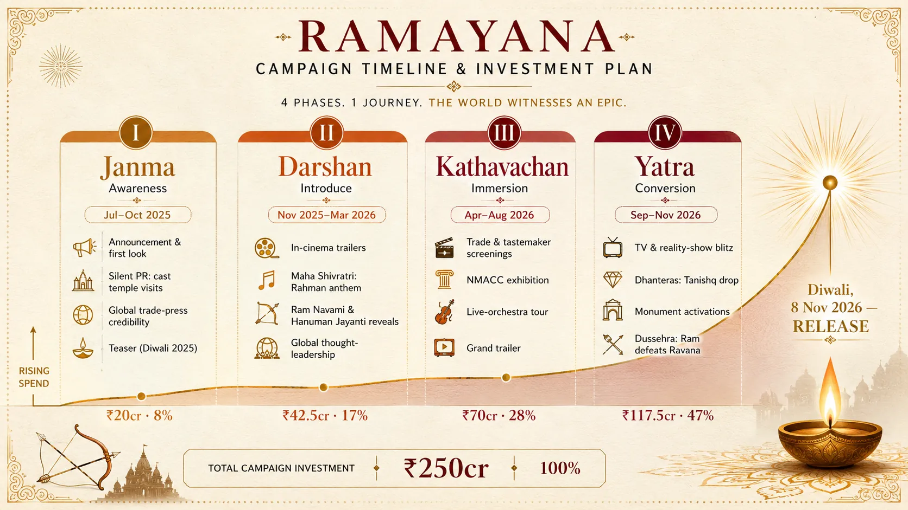

Marketing India's Greatest Epic
A ₹250 crore marketing campaign to turn the world's oldest story into a global box-office event.
Context
Nitesh Tiwari's Ramayana is the most expensive film India has ever made: roughly ₹835 crore (about $100m) for Part One alone, ahead of Kalki 2898 AD (₹600cr), RRR and Adipurush (₹550cr each) and Brahmastra (₹375cr) (Outlook Business). It is produced by Namit Malhotra's DNEG, shot for IMAX, scored by A.R. Rahman and Hans Zimmer, with Ranbir Kapoor as Ram, Sai Pallavi as Sita and Yash as Ravana. Part One releases on Diwali, 8 November 2026.
The assignment: build the integrated campaign. I wrote a four-phase architecture named after the epic itself (Janma, Darshan, Kathavachan, Yatra), anchored every reveal to a Hindu festival date, and built a PR-led spine. The real campaign has since done much the same: the "Rama" teaser dropped on Hanuman Jayanti, the studio took 20 minutes of footage to global distributors at CinemaCon, and the release sits on Diwali (DESIblitz). The part that needed real work was the plan behind it, so that is what this piece rebuilds.
Problem
The number is the problem. Because cinemas and distributors keep about half the gross, a film budgeted at ₹835 crore has to take roughly ₹1,600 to 1,800 crore worldwide just to break even in theatres. Only two Indian films have ever cleared that bar: Dangal (and only thanks to China) and Baahubali 2 (Outlook Business).
So the brief writes itself: India cannot recover this film on its own. The media plan has to turn a domestic epic into a genuine global event, on an Indian budget rather than a Hollywood one, while walking a fine line. This is a sacred story. Sell it like a soft drink and you lose the very audience you need most.
Insight
Three things shaped the plan.
The Ramayana already has a marketing engine no other film can buy. Faith, festivals, the nostalgia of the 1987 Ramanand Sagar serial, and the pride of a 35-million-strong diaspora. In fact the story is built into the festival calendar: Dussehra marks the day Ram kills Ravana, and Diwali, the release date, exists to celebrate his return to Ayodhya. The country is already staging the film's plot every autumn. Paid media's job isn't to manufacture awareness in India, devotion does that, it's to direct that energy and convert it.
The guardrail is the strategy, not a limit on it. You cannot be seen exploiting people's faith for a ticket. So the campaign never trades on devotion as a hook. In India it sells pride and scale: "witness this grand event, the Ramayana as you have never seen it." Abroad it sells a mythic epic, India's serious swing at a world-class film, a 5,000-year-old story told with Hollywood craft. That second framing is the permission slip that stops a non-Indian filing it under "foreign religious film."
Abroad, the model isn't Bollywood, it's Nolan. Christopher Nolan's The Odyssey is selling an ancient myth to the world as a premium IMAX event, with tickets gone a year out and demand crashing AMC's app (Variety). That is the register for crossover audiences. We actively counter-programme the Bollywood baggage (bloated runtime, melodrama, songs that stop the story) by simply never showing it in the international cut.
Strategy
One line: paid-media muscle, earned multiplier. Build a serious, phased, market-tiered paid plan, then let the earned engine (festivals, PR, devotion, pride) make every rupee punch above its weight.
And one line that splits the work by geography, because top-of-funnel does a different job in each market: in India, ignite and convert; in the world, teach and recruit. India already knows the story, so spend skews down the funnel to consideration and conversion. Abroad, awareness has to carry education too, so spend skews up the funnel into explaining a myth most people have never met.
The budget, derived not guessed. ₹250 crore, about 30% of the Part-One production cost: three to four times the Indian norm of roughly 8% (Kalki spent about ₹50cr on a ₹600cr film), because this is a global tentpole, but well under Hollywood's 50 to 100% prints-and-advertising norm, because the earned engine carries the early load (Gulte, Outlook Business).
- Geography: 58% India (₹145cr), 42% international (₹105cr). India is the biggest single market and the cheapest reach; the overseas rupees close the break-even gap.
- Phasing: spend climbs across the four phases (8% / 17% / 28% / 47%), earned-led early, a paid blitz at release.
- Markets, tiered P1 to P4: P1 North America and the GCC, P2 the UK and Australia, P3 Southeast Asia (where the Ramayana is a local story) and Germany, P4 Japan and the rest, PR-led.
- Brand partners as a budget multiplier: tie-ins (Tanishq, Taneira, Haldiram's, The Souled Store, tourism) spend their media carrying the film, lifting effective firepower from ₹250cr to about ₹360cr.
Goal: a global theatrical event that clears break-even and lifts the overseas share of the gross. KPIs shift by phase, from earned reach and share of voice early, to advance bookings, opening-weekend occupancy and box office at release. Full mechanics, the digital build, the festival calendar and the partner roster are in the marketing campaign.
Execution
Money follows the phases and the festivals. Janma is almost all earned: quiet temple visits, festival-timed reveals, credibility pieces in global trade press, and the CinemaCon-style screenings to tastemakers and distributors that the real film used to land a Warner Bros global release. Darshan introduces the world through character reveals on the gods' own birthdays (Ram on Ram Navami, Hanuman on Hanuman Jayanti) and ignites the music engine with a Rahman anthem at Maha Shivratri. Kathavachan deepens it with the NMACC exhibition, an international live-orchestra tour peaking at Dussehra, VFX featurettes and the grand trailer. Yatra is the conversion blitz: TV, cinema, performance digital, the Tanishq drop on Dhanteras, and monument projections (Burj Khalifa, London Eye) into Diwali.
The Times Square banner and the monument projections (Burj Khalifa, the London Eye) run as earned-media buys: a ₹2 to 5 crore activation bought for the global headlines it generates rather than for raw reach. And the casting is framed with care: Yash playing Ravana is sold as a mark of the character's stature, "the greatest adversary demands the greatest actor", and the North-and-South pairing as all of India coming together, never as a hierarchy.
Impact
It is a plan, not a release, so these are targets with the reasoning attached.
- Target gross: about ₹1,900 crore worldwide, clearing the ₹1,600 to 1,800 crore break-even and landing in Baahubali 2 territory.
- Overseas share lifted from the norm of ~22% to ~32% of the gross. Baahubali 2 took about ₹400cr of its ₹1,788cr abroad. Moving that share up is precisely what the international tiers and the Odyssey-style premium play are built to do.
- Marketing-to-gross of about 13%, efficient for a global tentpole, and de-risked further by pre-sold regional, OTT, music and satellite rights, which for comparable films have recovered most of the cost before release (Outlook Business).
The point of the rebuild was to make the money tell one story the original plan didn't: how ₹250 crore turns a film India can't pay for into one the world helps pay for.
Companion document: the full marketing campaign (budget derivation, channel/market/phase allocation, the digital build, festival calendar, brand-partner leverage and the outcome model).